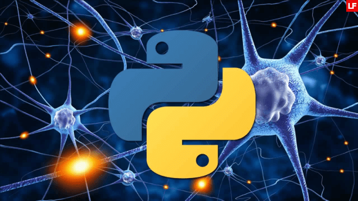
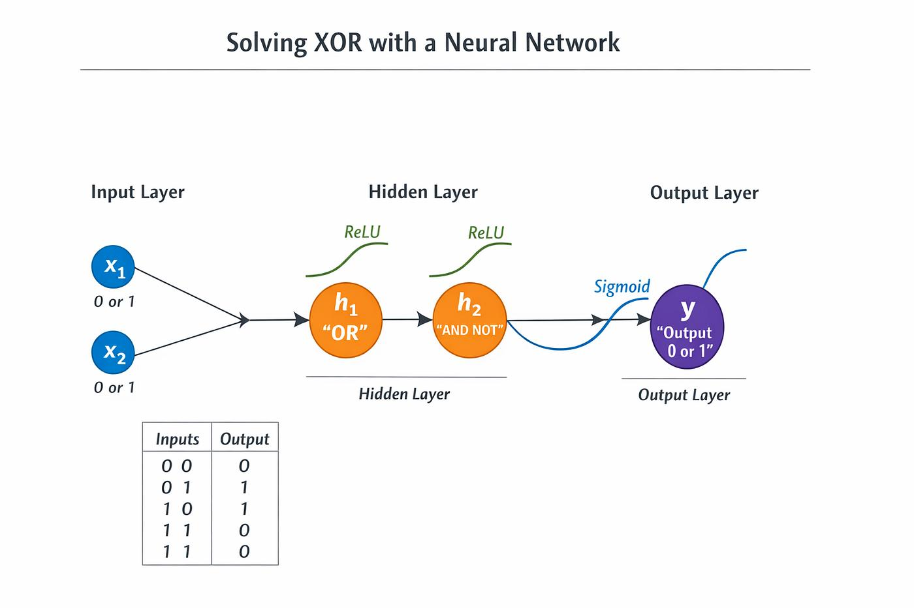
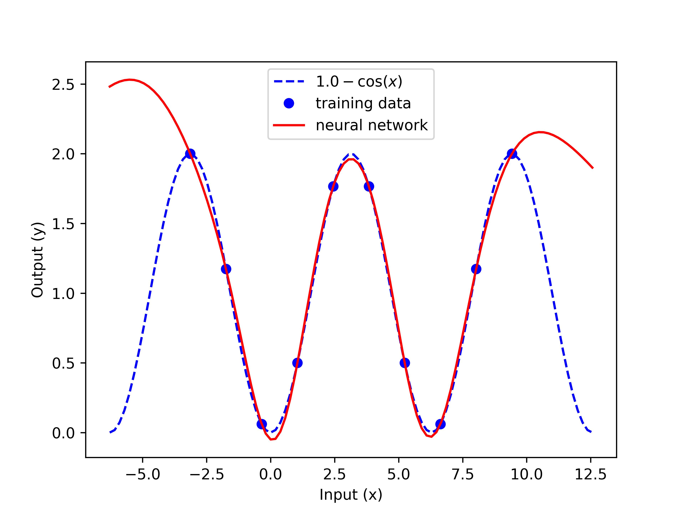
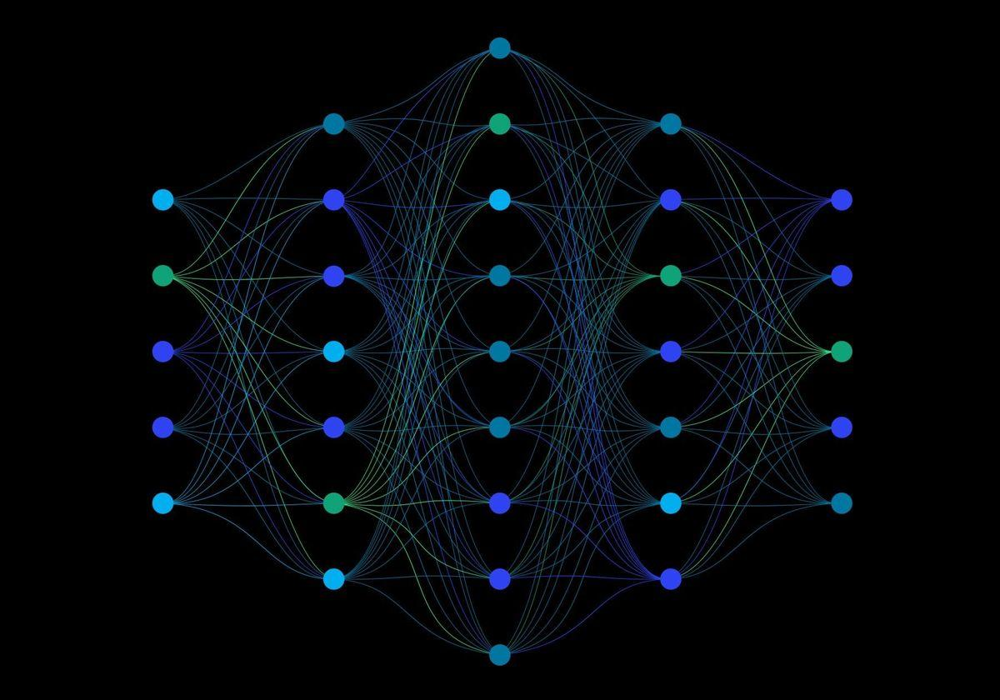

Build and train neural networks with a lightweight, educational library designed for learning and experimentation.

PyDL makes deep learning accessible by providing a complete neural network framework written entirely in pure Python. Its focus is simplicity, readability, and understanding rather than production-scale performance.
EducationalLearn the principles of neural networks through clean and understandable code. |
Zero DependenciesNo NumPy, TensorFlow, or external libraries required. |
|---|---|
Flexible ArchitecturesCreate models with any number of layers and neurons. |
Experiment FreelyPerfect for testing activation functions, optimizers, and learning algorithms. |
|
 ClassificationTrain models to recognize patterns and solve logical or categorical problems. |
 Function ApproximationLearn mathematical functions such as cosine or other continuous relationships. |
 Custom AI ModelsDesign your own neural network architectures for educational projects. |
|---|
Feedforward NetworksBuild fully connected neural networks of any depth. |
BackpropagationTrain models by automatically updating weights and biases. |
|---|---|
12 Activation FunctionsChoose from ReLU, Sigmoid, Tanh, GELU, Mish, Swish, and more. |
Model EvaluationMeasure accuracy and prediction error with built-in tools. |
Learning Rate FinderAutomatically search for efficient training parameters. |
JSON SerializationSave, load, and clone trained models with ease. |
StudentsDiscover how deep learning works from first principles. |
DevelopersPrototype neural network ideas without heavy frameworks. |
EducatorsTeach AI concepts with readable and transparent implementations. |
|---|
PyDL is completely open source and released under the MIT License. Explore the source code, contribute, or build your own neural network projects today.